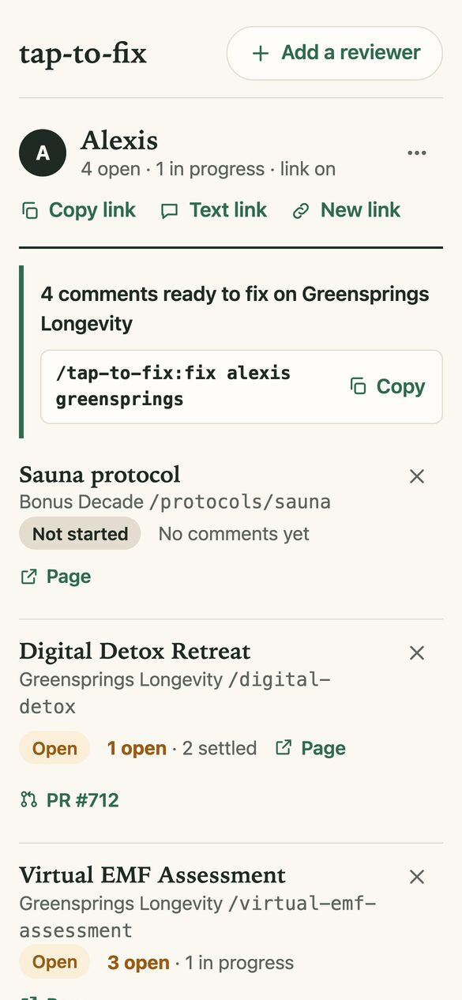
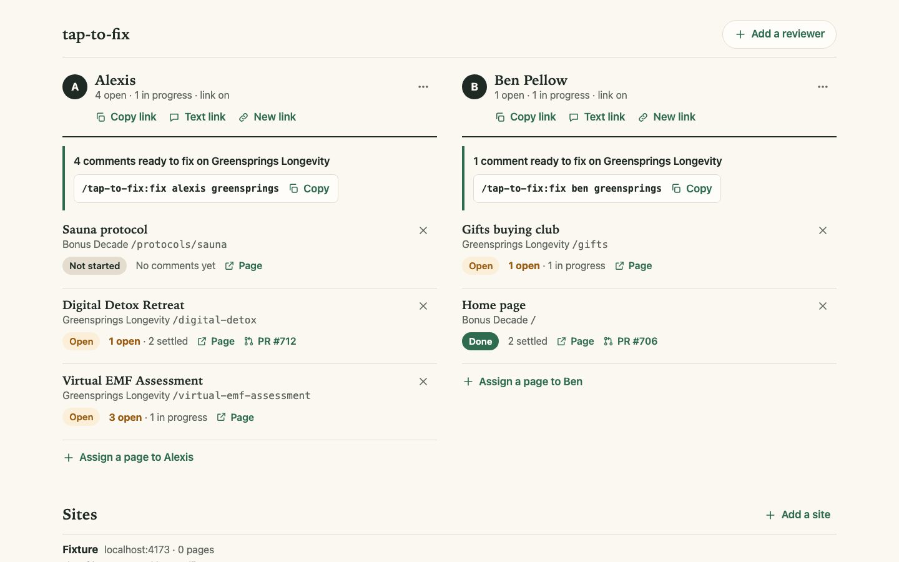
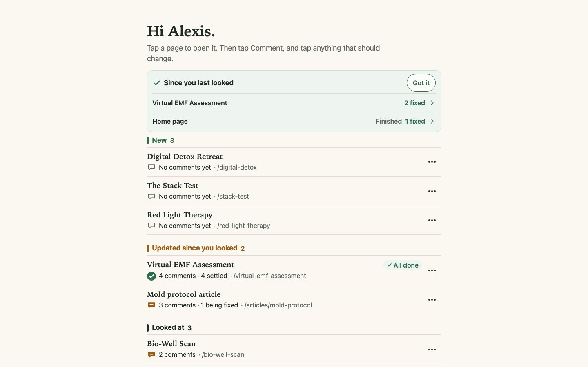
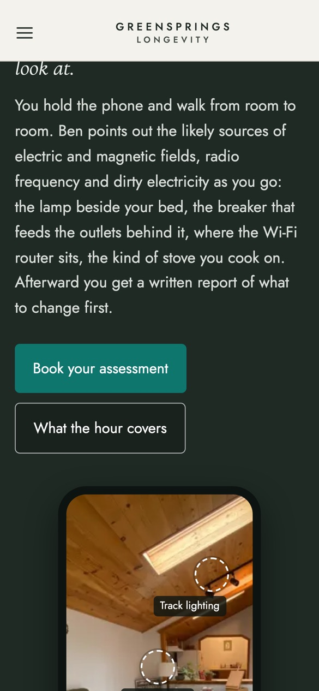
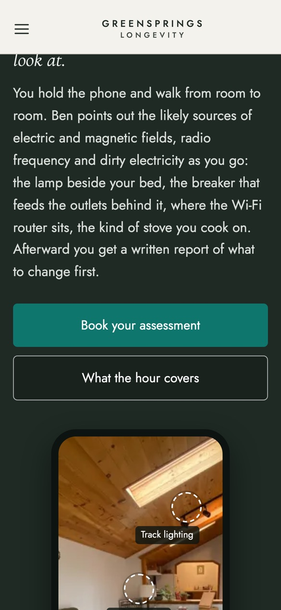

How it works
From a tap to a fix
Reviewers need no account and nothing to install. Ordinary visitors to your site never see any of it.
-

A reviewer taps
They open their private link, tap the spot that looks wrong and say what should change. A screenshot and the exact element come along.
-

You run one command
Your dashboard shows who has comments waiting and the command to run. In Claude Code,
/tap-to-fix:fixworks through them as a review cycle, one pull request per fix. -

They see it done
Each comment's status goes back to the reviewer as it's fixed. A note at the top of their list says what was fixed since they last looked, so they know what changed without asking.
Two dashboards
One for you, one for them


Start to finish
Watch a real comment become a real fix


Spot it
On a phone, the “Book your assessment” button stops halfway across the page.
Tap it and ask
The reviewer taps the button and types:
Should this button be full width on mobile?
The pin records exactly which button.It's fixed
/tap-to-fix:fixmade the buttons full width in one pull request, and the comment showed as done on the reviewer's list.
Install
Set it up in a few minutes
You need Claude Code, Node 22 and a free Cloudflare account. Everything runs on your own account.
- Install the plugins in Claude Code. Tap to Fix uses Proofs for its review cycle.
/plugin marketplace add workingBen/proofs /plugin install proofs@proofs /plugin marketplace add workingBen/tap-to-fix /plugin install tap-to-fix@tap-to-fix
- Deploy your own service with
/tap-to-fix:setup. It creates one database, one storage bucket and one Worker on your Cloudflare account, and gives you a script tag and your owner link. - Add the script tag to your site's pages. Visitors see nothing; only someone with a reviewer link does.
- Add a reviewer on your dashboard, assign them pages, and text them their link.
The full quickstart covers content security policies and every option.
Your data
It stays on your account
- No hosted service. Comments, screenshots and reviewers live in your own Cloudflare database and bucket.
- Screenshots have no public address. Only you and the reviewer who took one can see it.
- Reviewer links keep their key after the
#, which browsers never send to your site's server or logs. - Limits on every write: comment size, screenshot size, and how many comments a reviewer can save a minute and a day. SECURITY.md lists them all.